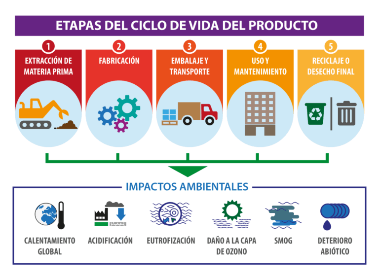

3. Evaluación de impactos ambientales en nuestro sector productivo.
En esta sección se analiza la evaluación de impactos ambientales dentro del sector de la informática y la comunicación, considerando cómo las actividades tecnológicas influyen en el medioambiente y cómo se pueden mitigar dichos impactos a través de estrategias sostenibles.
